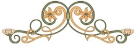

Verkkosivuston lähteet
Verkkosivustolla käytetyn aineiston, tekstien, kuvien, äänitteen tekijät ja muut lähteet.
Sivuston tekijät
- Sivuston suunnitellut ja toteutus: Kaisu Kiventaus
- Sivuston tekstit; etusivun aloituskappale, verkkosivuston elämäkertateksti sekä Heijastuksia-kirjoitukset: Tuire Ranta-Meyer. Muut sivuston tekstit on kirjoittanut sivuston tekijä.
- Juhlavuoden logon on Melartin-seuran tilaama,tekijä x.x. (tieto on Melartin-seuralla)
- Copyright: Kaisu Kiventaus, Tuire Ranta-Meyer ja Erkki Melartin -seura
Erkki Melartinin valokuvat
Erkki Melartinin muotokuvat ovat Finna.fi-palvelusta:
- Etusivun yläbannerin muotokuva: valokuvaaja Daniel Nyblin 1901, Sibelius-museon arkisto.
- Melartin elämänkerta-sivun muotokuva ja etusivun Elämänkerta-yhteydessä esitetty muotokuva: valokuvaaja Daniel Nyblin 1897; Sibelius-museon arkisto.
- Heijastuksia-sivun yläbannerin kuva ja etusivun Heijastuksia-yhteydessä esitetty kuva: Erkki Melartin, stående utomhus. Sibelius-museon arkisto.
- Elämänkerta-sivun kuva: Erkki Melartin vieraineen kotinsa ruokasalissa. Kuvakeskus. Helsingin kaupunginmuseo. Saatavilla Finna-palvelusta.
- Elämänkerta-sivun kuva, jossa Melartin orkesterin edessä: Nyslott operafestspel 1912; operan Aino (Melartin). Kuvaaja Uolevi.
- Kaksi kuvaa Elämänkerta-sivulla vielä vailla lähdetietoa; nämä on saatu tutkija Ranta-Meyerilta.
Äänite
- Säveltäjä: Erkki Melartin Romanssi op. 44, nro 5. Esittäjät: Hugo Huttunen (viulu) ja Erkki Linko (piano) 1929 https://finna.fi/Record/doria.10024_72347 / viitattu 7.5.2024
Tausta- ja koristekuvat
- Etusivun gramofoni-kuva: Pixabay.com
- Elämänkerta-sivun keltaisella pohjalla oleva Art Nouveau -kukkakuva: Wallpapers.com
- Art Nouveau -koristeet: Freepik.com
- Art Nouveau -taustakuvat: Wallpapers.com
Fontit
Art Nouveau -fontit: Metropolitain ja Boeklins Universe: 1001fonts.com